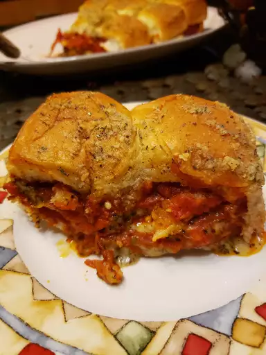

Pizza Sliders
Description
These sliders really taste like pizza (as they should) but with a hint of sweetness from the Hawaiian rolls. Trying to separate them can get messy but they are absolutely delicious.
Ingredients
- cooking spray
-
1
1/2 cups (6 oz.) finely pre-shredded low-moisture part-skim mozzarella cheese - 1 cup (about 3 1/2 oz.) finely pre-shredded Italian cheese blend
1/4 cup finely chopped fresh basil1/4 teaspoon black pepper- 2 teaspoons dried Italian seasoning, divided
-
1
1/3 cups pizza sauce (from 1 [13-oz.] jar) - 2 tablespoons sun-dried tomato pesto
- 1 (12 count) package Hawaiian sweet rolls
-
3/4 cup (about 3 oz.) thinly sliced pepperoni - 2 tablespoons unsalted butter
- 1 tablespoon grated Parmesan cheese
Steps
- cooking spray
- 1 1/2 cups (6 oz.) finely pre-shredded low-moisture part-skim mozzarella cheese
- 1 cup (about 3 1/2 oz.) finely pre-shredded Italian cheese blend
- 1/4 cup finely chopped fresh basil
- 1/4 teaspoon black pepper
- 2 teaspoons dried Italian seasoning, divided
- 1 1/3 cups pizza sauce (from 1 [13-oz.] jar)
- 2 tablespoons sun-dried tomato pesto
- 1 (12 count) package Hawaiian sweet rolls
- 3/4 cup (about 3 oz.) thinly sliced pepperoni
- 2 tablespoons unsalted butter
- 1 tablespoon grated Parmesan cheese